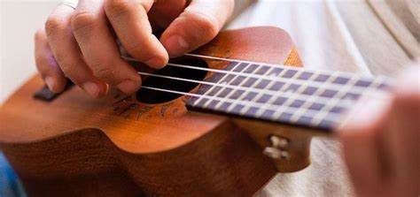

Mustech
Instrumentos Musicais e Tecnologias Gerais de Som e Audio
Abas de Busca
Instrumentos de Corda
- Violão, Guitarra, Baixo etc...
Instrumentos de Percussão
- Bateria Acustica, Baterua Eletronica etc..
Instrumentos que utilizam a corrente elétrica
- Teclado etc...

Entre aqui no site de som e audio
Mustech - Som e Audio